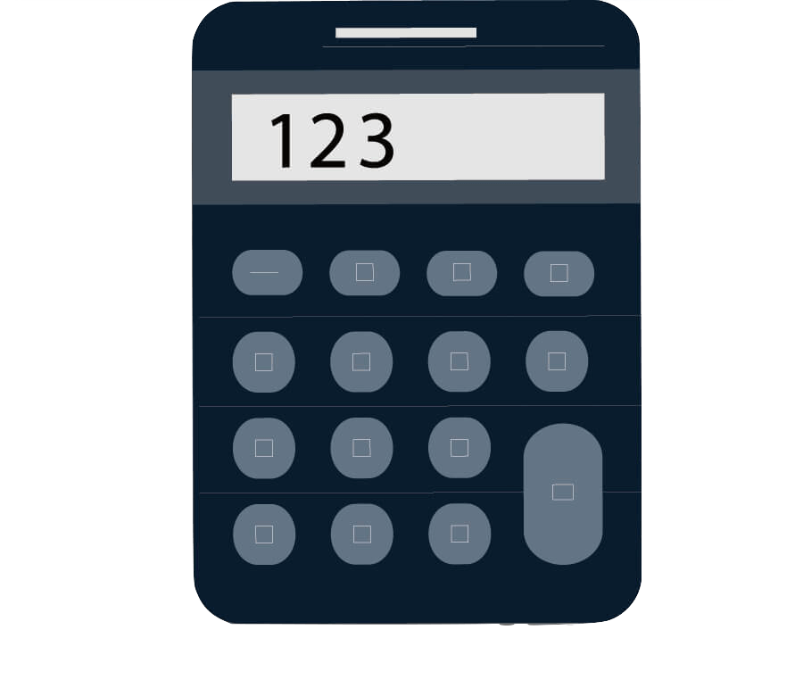

Realizamos traducciones literarias y académicas de tesis, monografías, papers, ensayos, textos filosóficos, crónicas, novelas, cuentos, poesías…
También trabajamos con materiales para sitios web, portfolios y páginas personales de profesionales, artistas y desarrolladores.
Nuestras trayectorias provienen de los ámbitos académico, docente, literario y editorial. Además de traducir también escribimos, leemos y enseñamos, por lo cual tenemos un contacto de primera mano con el tipo de materiales con los que trabajamos. Residimos en Argentina pero trabajamos y colaboramos con clientes y colegas de todas partes.
Ofrecemos una traducción de calidad, con un trato personalizado.
Trabajamos con traductores nativos o bilingües del idioma al que se traduce.
Soy licenciada y magister en Filosofía por la Universidad Paris 8 Vincennes Saint-Denis. Actualmente vivo en Buenos Aires, trabajo como docente y traductora fr>es y es>fr de textos académicos (artículos, resúmenes de tesis, ponencias, etc.). Participé en diversos proyectos editoriales de traducción vinculados a la Filosofía, la Educación y las Humanidades. Enseño francés en distintos espacios (Centro Universitario de Idiomas, Universidad de Belgrano, Escuela de Danzas Aída V. Mastrazzi, etc.) y también me desempeño como docente de Filosofía de la Educación en el Profesorado Pueblos de América.
Soy Profesora de Filosofía (UBA), Diplomada en Constructivismo y Educación y Diplomada en Bioética (FLACSO). Asimismo, me encuentro finalizando una Especialización en traducción literaria en Inglés (UBA). Soy docente del taller de redacción académica ofrecido por el Departamento de Filosofía de la UBA y realizo traducciones de textos académicos y artículos especializados.
Escritor y editor. Me desempeñé siempre en actividades vinculadas con la escritura y el mundo de la cultura. Trabajé como librero en la librería La Libre de Buenos Aires, durante casi diez años. Publiqué libros de teatro, poesía y narrativa. Actualmente me dedico a realizar traducciones literarias del francés y a generar contenidos para páginas web. Además estoy dando mis primeros pasos como desarrollador web. Soy administrador y autor del sitio orbislibris.com, en el que comparto reseñas y artículos sobre libros de literatura, mitología y filosofía.
Francesa, resido en Argentina desde hace once años. Titulada de Letras en mi país, también me formé allá en filosofía política y periodismo. Desde hace varios años ya, ejerzo como profesora de francés y a la vez como traductora (del castellano hacia el francés), más especificamente en periodismo y psicoanálisis.
Estudié filosofía en la Facultad de Filosofía y Letras (UBA) y actualmente me encuentro escribiendo mi tesis de Licenciatura. Realicé una estancia de estudios en Sorbonne en el año 2016 tras haber estudiado francés en la Alianza Francesa de Buenos Aires durante 5 años. Llevé a cabo traducciones de artículos y libros del francés al castellano sobre temas filosóficos para diversas cátedras de la Facultad de Filosofía y Letras (UBA).
Y este es un Gustave Flaubert de la buena suerte
Utilizamos como referencia los aranceles fijados por la Asociación Argentina de Traductores e Intérpretes (AATI). A partir de ese parámetro cada cotización varía según la complejidad del trabajo, la presencia de lenguaje técnico, la cantidad de palabras y el tiempo de entrega, entre otras variables.
Podés escribirnos para solicitar una cotización:
E-mail
WHATSAPP

Podés consultar los aranceles orientativos de la Asociación Argentina de Traductores Literarios aquí: